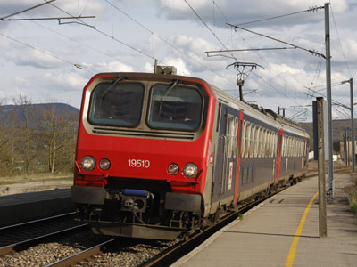
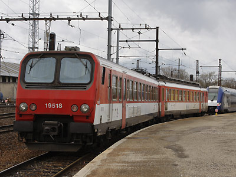
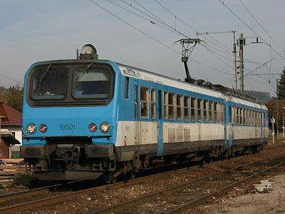
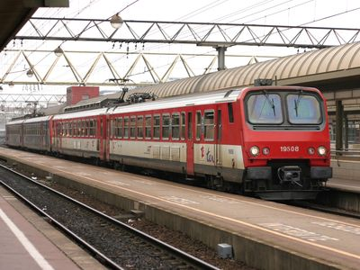
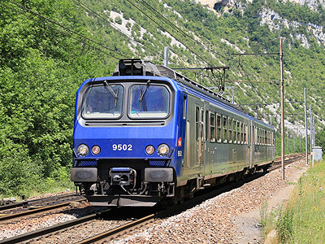
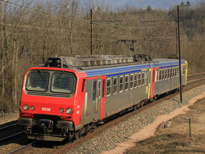

Ferrovia - 24 Octobre 2012
Z 9500 - Z 99500
Z2 Bicourant Express
Les Z 9500 sont des éléments automoteurs bicourants à deux caisses conçus pour les services régionaux Express et construits à 18 exemplaires en 1982/83, auxquels s'ajoutent les deux éléments Z 99581 et 99582 identiques mais financées par la région Franche Comté. Elles roulent en Rhône Alpes sur l'étoile de Savoie et en Franche Comté entre Dijon et les lignes du Jura.
La composition de l'élément est la Z 9500 proprement dite (motrice à adhérence totale à quatre moteurs) et une ZR 19500.
Elles peuvent fonctionner en unités multiples jusqu'à quatre éléments entres elles et avec les Z 7300, Z 7500, Z 9600 et Z 11500 qui composent le parc des "Z2".
Quelques données techniques
Constructeur : Francorail-ANF
Tensions d'alimentation : continu 1,5 kV et monophasé 25 kV, 50 Hz
Chaîne de traction : Rhéostat sous courant continu, pont mixte sous monophasé
Motorisation: 2 moteurs à courant continu par bogie, 2 bogies moteurs sur la motrice.
Puissance totale : 1275 kW
Longueur : 50,2m
Masse : 116t
Pour plus d'info :
La fiche Z 9500 sur Wikipedia
Fiche technique des Z 9500 de Florent Brisou
L'inventaire des Z 9500 sur Trains du Sud-Ouest

La Z 9510 Franche-Comté en livrée d'origine à Arc-et-Senans (13/04/2008)

La Z 9518 Rhône Alpes à Ambérieu (13/03/2008)

La Z 9501 à Albens (22/10/2006)

Z 9508 et 9510 en UM à Lyon Part-Dieu (04/12/2004)

La Z 9502 dans la Cluse des Hôpitaux (03/07/2011)

La Z 9516 Rhône Alpes mais en livrée Bourgogne à Belmont-Luthézieu (18/02/2012)